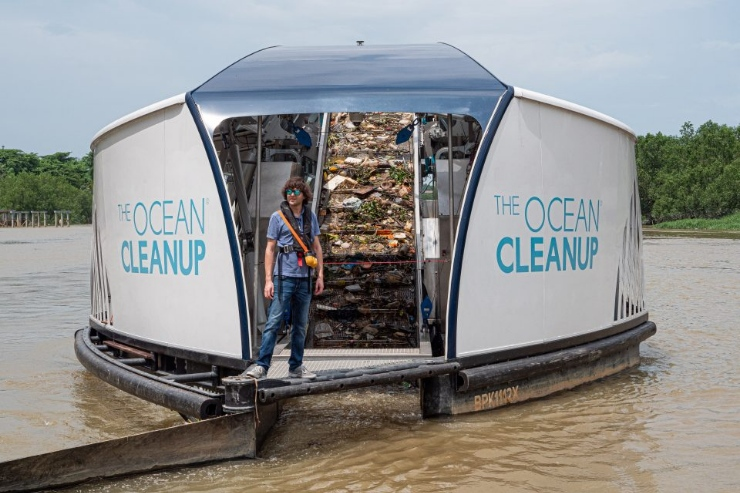

Nos contate
Problemas
Microplásticos: A poluição do oceano por microplásticos, fragmentos de plástico menores que 5 mm, que são onipresentes em nossos cursos d'água.
A ingestão de microplásticos causa danos físicos e exposição a toxínas. Eles ameaçam tanto ecossistemas marinhos quanto a saúde humana, na medida que se acumulam na cadeia alimentar.
Desinformação: Falta de disseminação de dados sobre a saúde e poluição dos oceanos para a população e empresas.
Origem dos microplásticos no oceano

Nossa Tecnologia
Mapeamento dos microplásticos: Será criado uma rede de sensores capacitivos hipersensíveis, que vão detectar e mapear os microplásticos utilizando análise eletromagnética (detecção capacitiva) e inteligência artificial. Eles serão instalados em quaisquer superfícies submersas, como cascos de navios e boias.
Destruição dos microplásticos: Bactérias sintéticas, capazes de consumir plástico, descontaminarão a água. Serão utilizados drones subaquáticos (AUVs), que calcularão quantas delas serão necessárias serem liberadas para descontaminar a água.
Divulgação de dados: Nas cidades costeiras, serão instalados totens de relógio digital que também exibem o nível de contaminação da água. Além disso, será criado um site com índices de contaminação e mapeamento em tempo real.
Objetivos
Temos como meta a diminuição dos microplásticos no oceano como geral, além de informar dados sobre a saúde do oceano públicamente.
Nosso principal objetivo é restaurar os ecossistemas ao normal e afetar positivamente a quem depende deles.

Público-alvo
Nosso público-alvo são Prefeituras de cidades costeiras, empresas de iniciativa privada engajadas em atividades sustentáveis e ONGs que se interessam pela proteção da vida marinha, com recursos capazes de colocar nossa ideia em prática.
Benefícios
A eliminação dos microplásticos nas costas de uma cidade resulta em um ambiente marinho mais saudável, promove a segurança alimentar, melhora a saúde pública, estimula a economia local e fortalece a conscientização ambiental.
Informar sobre a saúde do oceano e o nível de contaminação promove práticas sustentáveis, protege o ambiente e previne riscos à saúde, engajando a sociedade na conservação marinha.

Impacto no dia a dia
A divulgação de dados sobre a saúde do oceano impacta o dia a dia das pessoas, especialmente na saúde pública em áreas marítimas. Informações claras sobre a qualidade da água ajudam a evitar riscos para banhistas.
A descontaminação da água melhora a estética das praias, beneficiando o lazer e o turismo local.